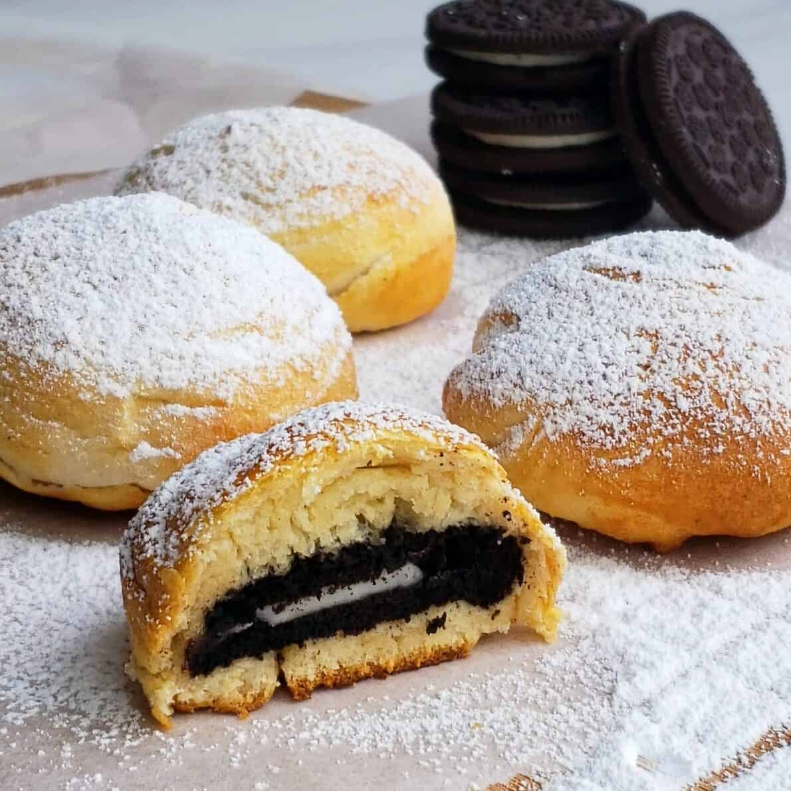

Chicken Fried Oreo

Description
This irresistable treat not only tastes delicious but making them is also a fun activity for the whole family!
Ingredients
- Oreos (or other cream-filled sandwich cookies)
- Pancake mix
- Vegetable oil
- Milk
- Eggs
Instructions
- Heat oil in deep-fryer to 375 degrees Farenheit (190 Celsius)
- Whisk together the egg, milk, and 2 teaspoons of vegetable oil in a bowl until smooth.
- Stir in the pancake mix until no dry lumps remain.
- Dip the cookies into the batter one at a time and carefully place into the hot frying oil.
- Cook until golden-brown (about 2 minutes)
- Drain on paper towel-lined plate before serving
Back to top